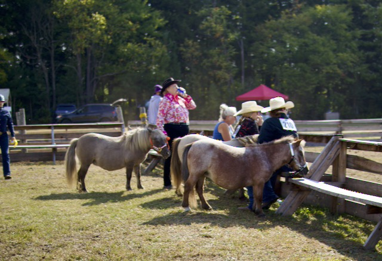
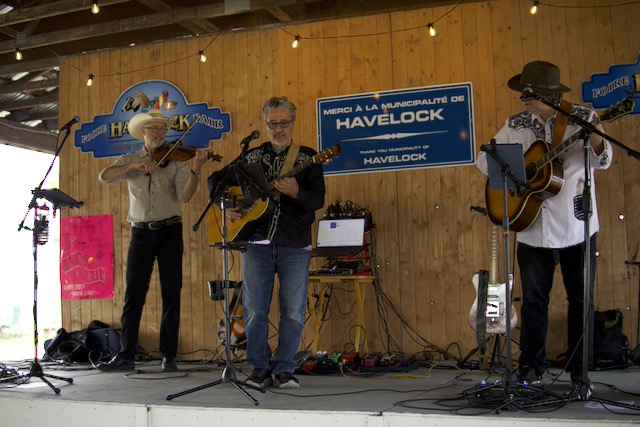

A Living Tradition Since 1871
The Havelock Fair is one of Canada's oldest continuously held agricultural exhibitions. Since 1871, it has served as the beating heart of the Haut-Saint-Laurent community — a gathering place where farmers, families, and neighbours come together each September to celebrate rural life.
Founded during an era when agricultural fairs were the primary way communities shared knowledge, traded livestock, and connected across the region, the Havelock Fair has adapted through generations while staying true to its roots. Today it draws visitors from across Quebec, Ontario, and the United States.
From hand-drawn plows to digital registration systems, the fair has modernized without losing what makes it special: the deep sense of place, the pride of local farmers and artisans, and the joy of a community that shows up for itself every year.

